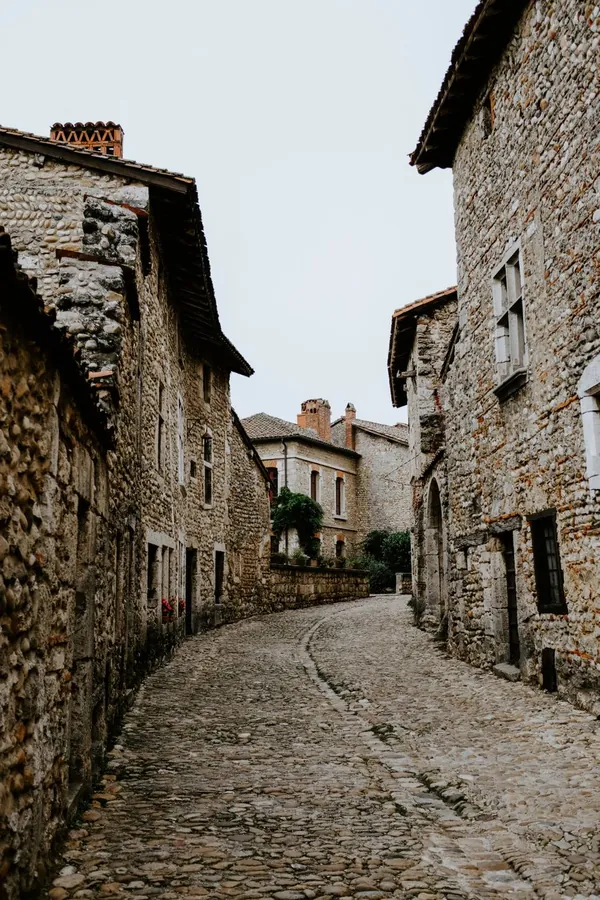
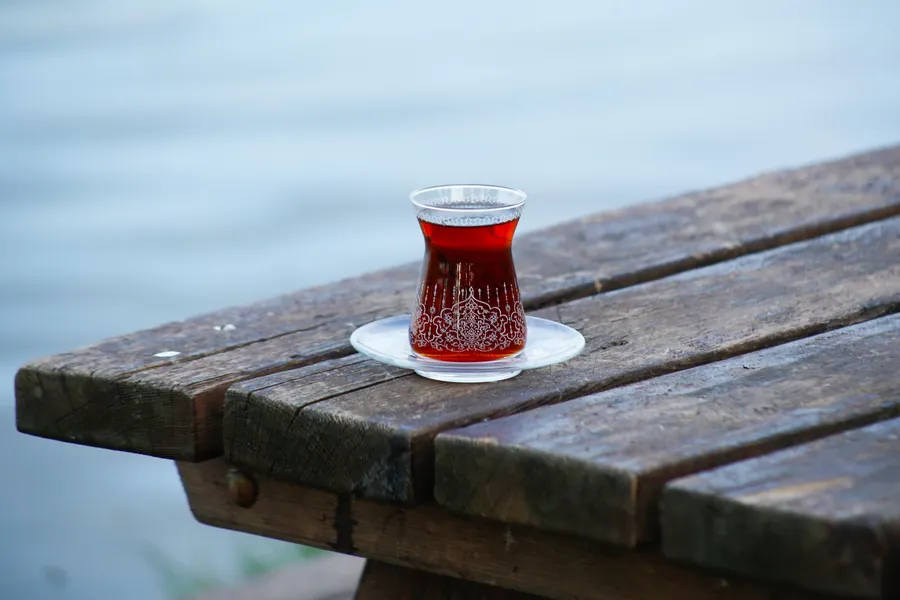
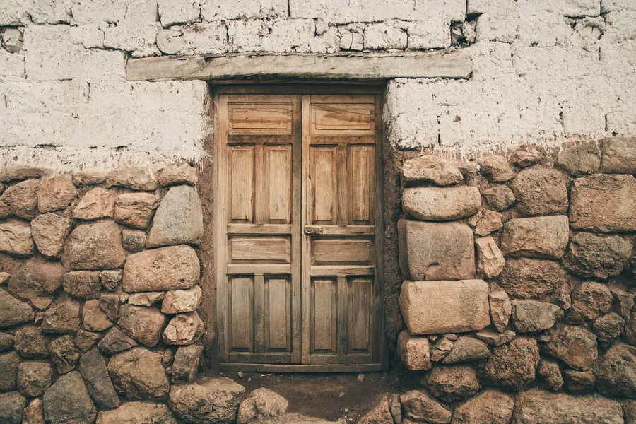
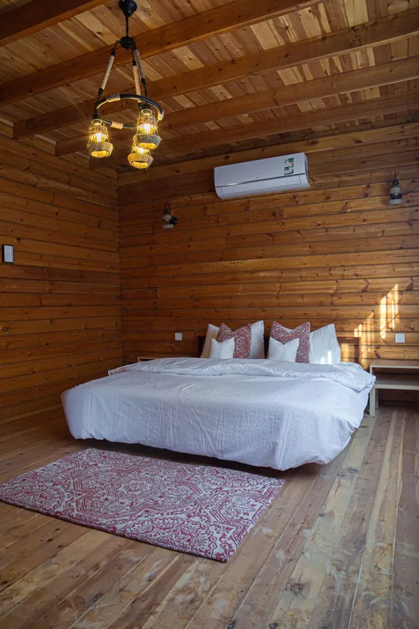
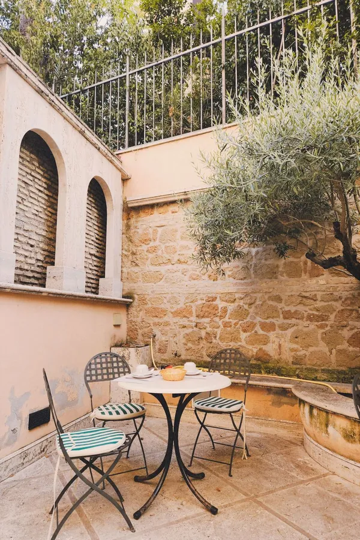
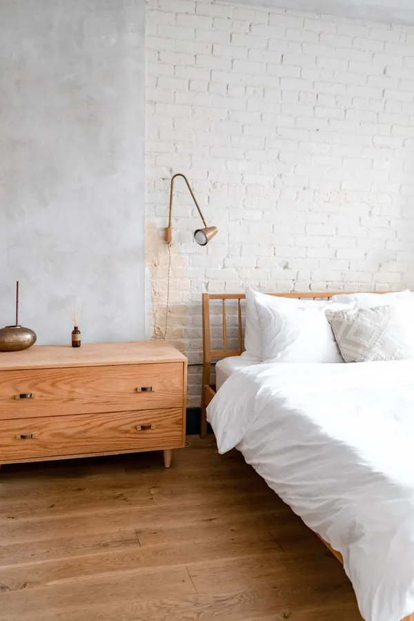
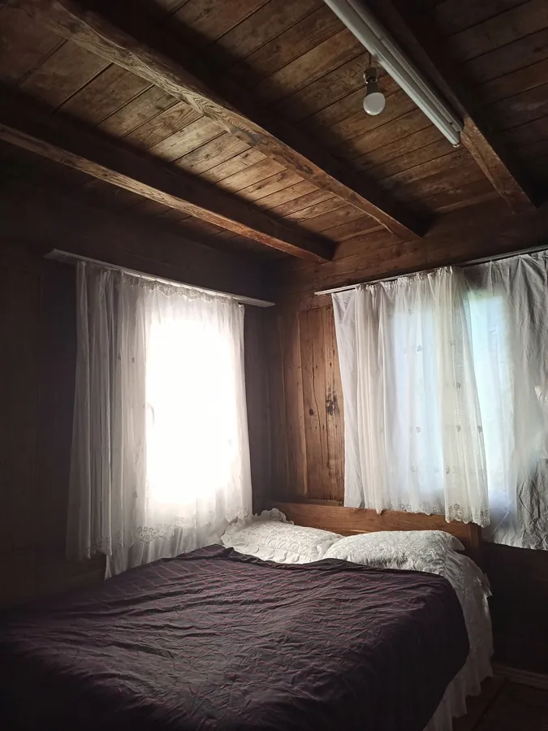

Tikir HouseDaşlı Sokak, dokuz numara.
Pamukkale'de küçük bir pansiyon. Aklınızdaki soruyu seçin, WhatsApp'ta doğrudan bize sorun; cevabı aracısız alın.






Odalarınızı
birlikte yazarız.
Aşağıdaki üç kart örnek yerdir. Oda tipleriniz, yatak düzeni ve olanaklar yayına alırken sizden öğrenilerek doldurulur; bilmediğimiz bir şeyi yazmıyoruz.


Örnek oda A
Odanızın kısa tanıtımı burada yer alır.
- Yatak düzeni
- sizden alınır
- Kişi sayısı
- sizden alınır
- Olanaklar
- sizden alınır
- Manzara
- sizden alınır
Fotoğraflar temsilîdir; oda kartları yayında gerçek odalarınızla değişir.
Ne öğrenmek
istersiniz?
Konuları seçin, isterseniz tarih ve not ekleyin. Sağdaki mesaj kendiliğinden hazırlanır; WhatsApp'ta tek dokunuşla gönderirsiniz.
Sokaktan
odaya, Pamukkale'ye.
Temsilî fotoğraflar. Yayında pansiyonun kendi çekimleri bu düzene yerleşir. Büyütmek için dokunun.
Kapıdan çıkınca
üç durak.
Pamukkale travertenleri ile Hierapolis antik kenti birlikte UNESCO Dünya Mirası Listesi'nde.


Daşlı Sokak
No 9.
Pamukkale
Konakladıysanız deneyiminizi Google'da paylaşabilirsiniz; sonraki misafirler için en güvenilir rehber budur.
Google'da yorum yazın